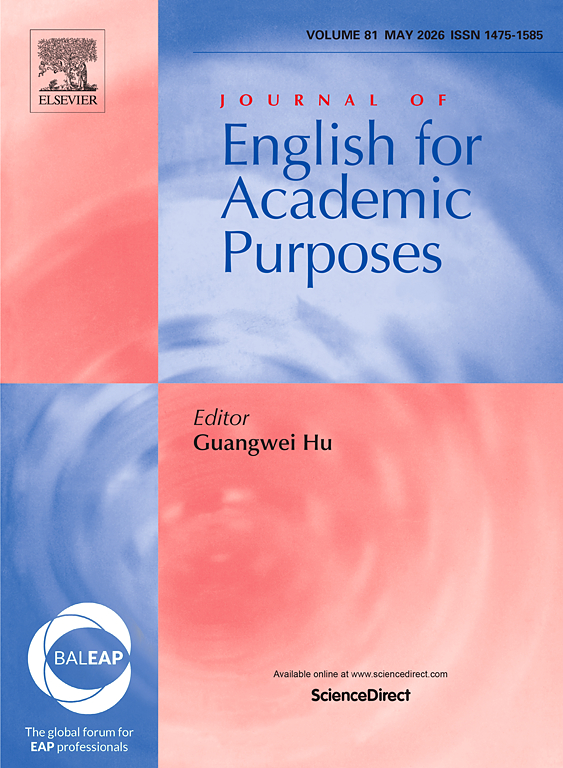
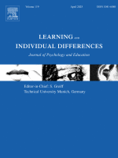
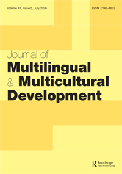
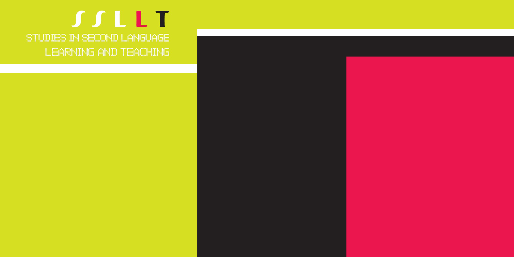

A systematic review of English medium instruction in higher education: An update of Macaro et al. (2018)
System, 136, 103892.
Selected work across English-medium instruction, self-regulated language learning, and language education with digital technologies.

Zhou, S.* (2025). Journal of English for Academic Purposes, 78, 101582.

Zhou, S., Xu, J., Rose, H., & McKinley, J*. (2025). Learning and Individual Differences, 119, 102628.

Zhou, S.*, & Thompson, G. (2023). System, 113, 102998.

Zhou, S.*, Fung, D., & Thomas, N. (2023). Journal of Multilingual and Multicultural Development.

Zhou, S., McKinley, J.*, Rose, H., & Xu, X. (2022). ELT Journal, 76(2), 261-271.

Zhou, S.*, & Thompson, G. (2023). Studies in Second Language Learning and Teaching, 13(2), 427-450.
System, 136, 103892.
Journal of English for Academic Purposes, 78, 101582.
Learning and Individual Differences, 119, 102628.
System, 135, 103856.
RELC Journal.
International Journal of Bilingual Education and Bilingualism, 27(4), 487-500.
International Journal of Applied Linguistics.
In S. Curle & J. Pun (Eds.). Researching English medium instruction (pp. 227-239). Cambridge University Press.
In D. Lasagabaster, A. Fernández-Costales & F. de Lis González-Mujico (Eds.). The Affective Dimension in English-Medium Instruction in Higher Education (pp. 97-118). Multilingual Matters.
System, 113, 102998.
Language and Education, 38(1), 1-18.
Applied Linguistics Review, 14(6), 1539-1561.
Language Teaching, 56(4), 539-550.
Language and Education, 38(1), 1-4.
ELT Journal, 76(2), 261-271.
In J. McKinley & N. Galloway (Eds.). English-medium instruction practices in higher education: International perspectives (pp. 35-36). Bloomsbury.
Asian Englishes, 24(2), 160-172.
RELC Journal, 52(2), 236-252.
London: British Council.
System, 141, 104093.
Applied Linguistics Review, 16(1), 509-535.
Language and Education, 39(1), 270-289.
International Review of Applied Linguistics in Language Teaching, 63(1), 783-806.
Journal of Multilingual and Multicultural Development.
Language Teaching Research.
Journal of Multilingual and Multicultural Development.
AILA Review.
Studies in Second Language Learning and Teaching, 13(2), 427-450.
Journal of Multilingual and Multicultural Development.
System, 103, 102644.
Computers & Education, 105687.
International Journal of Applied Linguistics.
RELC Journal.
Innovation in Language Learning and Teaching.
Computer Assisted Language Learning.
System, 123, 103310.
(*) indicates corresponding author. Underlined names indicate current or former supervisees or research assistants.
Impact factor and quartile badges are shown only when the journal appears in the supplied ranking reference images.